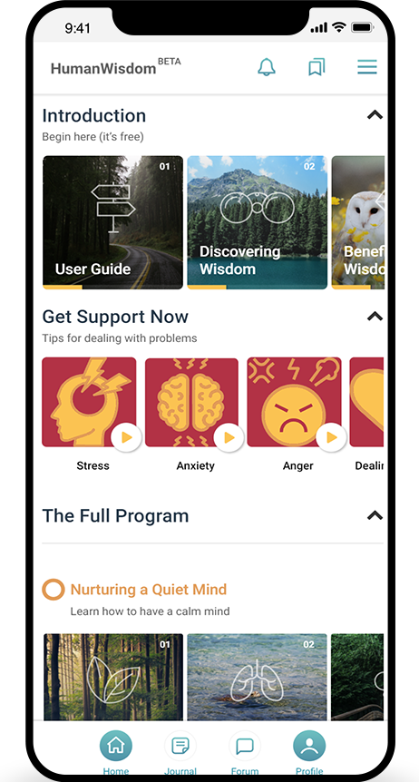
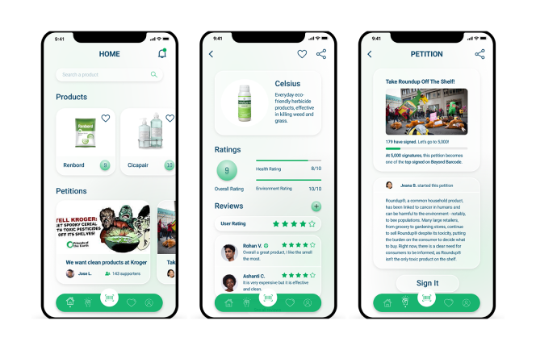

Hi, I am Pratik Mangtani. I am a product designer and developer. I use my background in Computer Engineering and the Culinary arts to solve human centered problems with strategic design.
My work
Human Wisdom Program
UX Design | Development - An E-learning app for mental health and self awareness
Beyond Barcode
UX Design - A solution to educate consumers about toxic ingredients in products.
